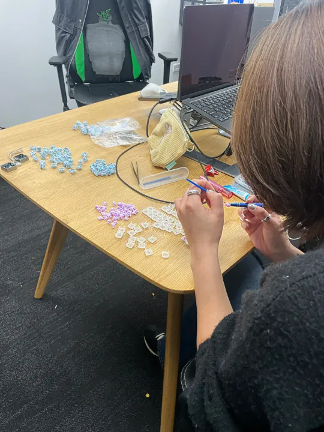
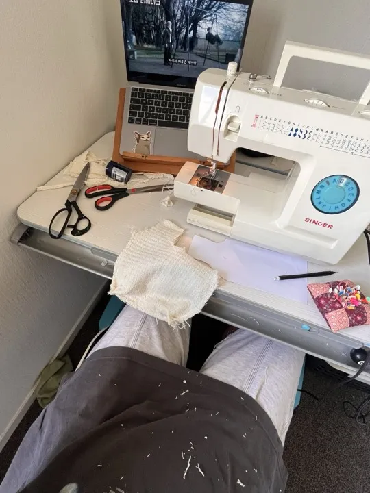
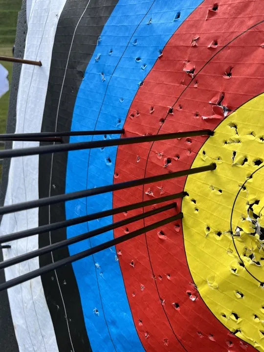
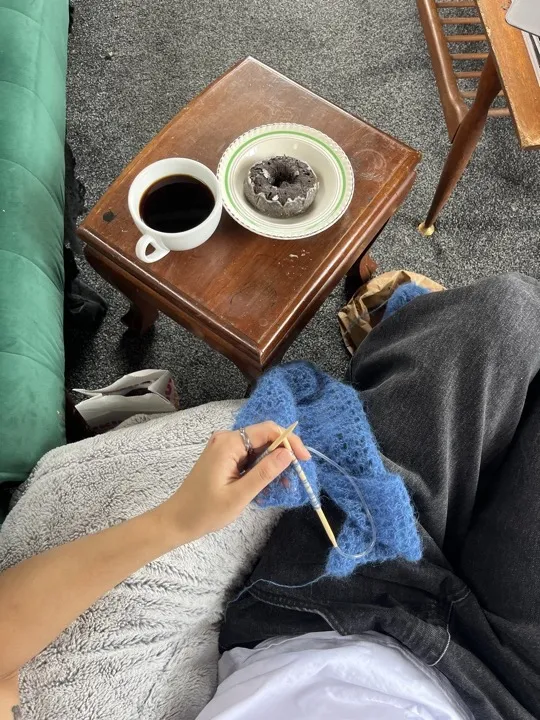
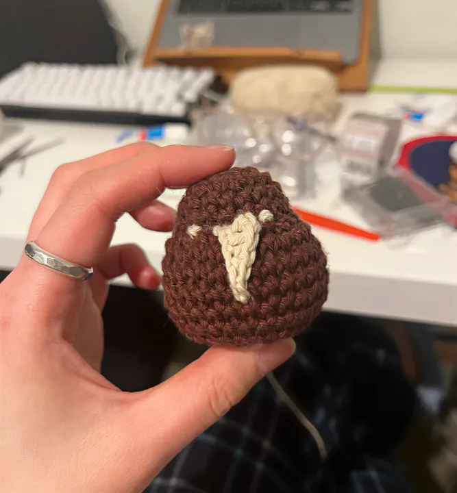

About
I work across creative coding, physical-digital experience, playful tech and user research.
I’m an experience designer, digging a little below the obvious. Most of my work starts with a “but why?” — a curiosity for why things are the way they are.
I live somewhere between physical and digital, making things that feel unexpected, intuitive, and a little joyful. Turning ideas into something you can actually feel.






Outside of design?
I still love making stuff with hands — crochet, sewing, mechanical keyboards (current obsession) and sometimes outside shooting arrows.